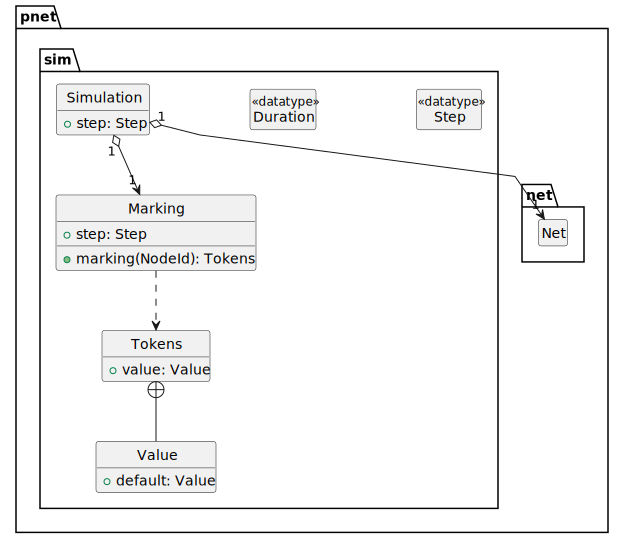

Notes on Petri Nets
Table of Contents
A Petri net is a graphical and mathematical modeling tool. The concept of Petri nets has its origin in Carl Adam Petri’s dissertation “Kommunikation mit Automaten”, submitted in 1962 to the faculty of Mathematics and Physics at the Technische Universität Darmstadt, Germany.
Petri nets are a well-used tool for describing and studying systems that are characterized as being concurrent, asynchronous, distributed, parallel, nondeterministic, and/or stochastic. As a graphical tool, Petri nets can be used as a visual-communication aid similar to flow charts, block diagrams, and networks. In addition, tokens are used in these nets to simulate the dynamic and concurrent activities of systems. As a mathematical tool, it is possible to set up state equations, algebraic equations, and other mathematical models governing the behavior of systems.
1. PTNet Modules

Figure 1: Core Modules
1.1. Common Types

Figure 2: Common Types and Interfaces
1.2. Net Core Module
A Net \(N\) consists of a tuple of places (the set \(P\)), transitions (the set \(T\)), and arcs (the set \(A\)) that connect them. Note that arcs are historically known as flow relations and the set is named \(F\).
\[\tag{Net} N = \left\langle P,T,A \right\rangle\]
The sets of places \(P\) and transitions \(T\) are disjoint.
\[ P \cap T = \emptyset\]
Arcs are a directed connection between a place/transition pair. We will use the notation \(a_{src}\) for the source end and \(a_{tgt}\) for the target end of an arc \(a\).
\[\tag{Net Arc} A = \left(P \times T \right) \cup \left(T \times P \right)\]
Input arcs connect a source place to a target transition.
\[\tag{Input Arc} a_{in} = \left\{ a \in A \mid a_{tgt} \in T \right\}\] \[ a_{in}(t) = \left \{ a \in A \mid a_{tgt} = t \right \}\]
The set of input places for a transition \(t\) is called its preset or \({}^{\bullet}t\).
\[\tag{Preset} {}^{\bullet}t = \left\{ p \in P \mid A(p,t) \right\}\]
Output arcs connect a source transition to a target place.
\[\tag{Output Arc} a_{out} = \left\{ a \in A \mid a{_src} \in T \right\}\] \[ a_{out}(t) = \left\{ a \in A \mid a{_src} = t \right\}\]
The set of output places for a transition \(t\) is called its postset or \(t^{\bullet}\).
\[\tag{Postset} t^{\bullet} = \left\{ p \in P \mid A(t,p) \right\}\]

Figure 3: Core Net Module
Textual Notation
net net0 {
place p1, p2
transition t1
arc p1 -> t1 -> p2
}
Graphical Notation

Figure 4: Core Net
1.3. Sim Core Module
Places can contain tokens; the current state of the modeled system (termed the marking function \(M\)) is given by the number of tokens in each place.
\[\tag{Marking Function} M: P \mapsto \mathbb{N}\]
The initial marking of a net is noted as \(M_{im}\) or more commonly \(M_0\). A marked net extends the Net tuple with a particular marking \(M\).
\[\tag{Marked Net} N = \left\langle P,T,A,M \right\rangle\]
Transitions are active components. They model activities which can occur (the transition fires), thus changing the state of the system (the marking of the Petri net). Transitions are only allowed to fire if they are enabled, which means that all the preconditions for the activity must be fulfilled, i.e. there are enough tokens available in the input places. For this check we use the undefined function \(min\) which can only be defined as we define the type of tokens later.
\[\tag{Enabled Function} enabled\left(t \in T \right) = \forall p \in {}^{\bullet}t: min\left(A\left(p,t\right)\right)\]
A net \(N\) is therefore enabled iff any transition in \(N\) is enabled.
\[enabled\left(N\right) \iff \exists t \in T: enabled\left(t\right)\]
When the transition fires, it removes tokens from its input places and adds some at all of its output places. The number of tokens removed or added depends on the cardinality of each arc.
The firing of transitions in the marking \(M_n\) results in the new marking \(M_{n+1}\). The interactive firing of transitions in subsequent markings is called the token game.

Figure 5: Sim Core Module
Textual Notation
net net0 {
place p1, p2, p3
transition t1, t2
arc p1 -> t1 -> p2 -> t2 -> p3
initial marking {
p1 = true
}
}
Graphical Notation

Figure 6: Basic Petri Net Components
1.4. Guarded Extension Module

Figure 7: Guarded Transitions Module
Textual Notation
TBD
Graphical Notation
TBD
1.5. Inhibited Extension Module

Figure 8: Inhibited and Reset Arcs Module
Textual Notation
net net0 {
place p1, p2
transition t1
arc p1 -inhibitor> t1
arc t1 -reset> p2
}
Graphical Notation

Figure 9: Inhibited and Reset Arcs
1.6. Read-Only Arc Extension Module

Figure 10: Read-Only Arcs Extension Module
Textual Notation
net net0 {
place p1, p2
transition t1
arc p1 -read- t1
arc t1 -> p2
}
Graphical Notation

Figure 11: Read-only Arcs Extension
1.7. Timed Extension Module

Figure 12: Timed Transitions Extension Module
Textual Notation
TBD
Graphical Notation
TBD
1.8. Weighted Extension Module

Figure 13: Weighted Arcs Extension Module
Textual Notation
net net0 {
place p1 {
capacity = 2
}
place p2 {
capacity = inf
}
transition t1
arc p1 -> t1 {
weight = 2
}
arc t1 -> p2 {
weight = 1
}
}
Graphical Notation

Figure 14: Weighted Arcs Extension
2. Elementary Nets
An Elementary net is a kind of place/transition net with the following characteristics.
- The token type is the boolean type \\(\mathbb{B}\\).
- Arcs do not have weights, or are modeled with fixed weights of 1.
- Places do not have capacity constraints, or are modeled with infinite \\(\infty\\) capacity.
- Transitions do not have duration values, or are modeled with a fixed duration of 0.
- Transitions do not have guard expressions, or are modeled with a fixed guard returning true \\(\top\\).
- No inhibitor, reset, or read-only arcs are allowed.

Figure 15: Elementary Net Module
3. Appendix: PTNet Language
PTNet is a source form that allows for compact representation of nets in a readable form.
3.1. PTNet Grammar
file = net | marking ; net = "net" name "{" property* defaults? tokens? node_or_arc* initial_marking? "}" ; property = name "=" ( value | duration ) ; defaults = "defaults" property_set ; property_set = "{" property* "}" ; tokens = "tokens" ( token_value "*" )? token_counter ; token_value = unit_type | token_set_boolean | token_set_integer | token_set_positive | token_set_natural | token_set_string | tuple_type | set_type ; token_counter = token_set_boolean | token_set_positive | token_set_natural | set_type ; unit_type = "()" ; token_set_boolean = "Boolean" ; token_set_integer = "Integer" ; token_set_natural = "Natural" ; token_set_positive = "Positive" ; token_set_strings = "String" ; tuple_type = "⟨" tuple_member ( "," tuple_member )* "⟩" tuple_member = name | new_token_set | new_token_tuple ; set_type = "⟨" set_member ( "," set_member )* "⟩" set_member = name | boolean | natural_positive | natural ; node_or_arc = place | transition | arc | subnet ; place = "place" name_list property_set? ; transition = "transition" name_list property_set? ; arc = "arc" arc_expression property_set? ; arc_expression = arc_name_or_expression_list arc_symbol arc_name_or_expression_list ; arc_name_or_expression_list = arc_name_or_expression ( "," arc_name_or_expression )* ; arc_name_or_expression = name | "(" arc_expression ")" ; arc_symbol = "->" | "-inhibitor>" | "-reset>" | "-read-" ; subnet = "net" name "{" property* defaults? public_places? node_or_arc* "}" ; public_places = "public" name_list ; initial_marking = "initial" marking ; marking = "marking" "{" property+ "}" ; name = ( ASCII_LETTER | GREEK_LETTER ) ( ASCII_LETTER | GREEK_LETTER | "_")* ; name_list = name ( "," name )* ; value = boolean | number | quoted_string | set_value | multiset_value | tuple_value ; bcfffvoolean = "true" | "false" ; number = natural | "inf" ; natural = "0" | natural_positive+ natural_positive = [1-9] ASCII_DIGIT* quoted_string = "\"" [^\"]* "\"" ; duration = "!" | natural_positive | ( "[" | "(" ) natural_positive "," natural_positive ( "]" | ")" ) ; set_value = "{" value ( "," value )* "}" ; multiset_value = "[" value ( "," value )* "]" ; tuple_value = "⟨" value ( "," value )* "⟩" ;
4. Appendix: GraphViz
4.1. Net
strict digraph {
id="{id}";
label="{label}";
bgcolor="transparent";
compound=true;
fontname="Helvetica Neue,Helvetica,Arial,sans-serif";
nodesep={seperation};
rankdir={rankdir};
ranksep{seperation};
}
| Parameter | Description | Default |
|---|---|---|
id |
use the prefix string “net” followed by a unique identifier (integer) | “net0” |
seperation |
determine node/rank spacing | 0.75 |
rankdir |
this is best as either “TD” for top-down, or “LR” for left-to-right | “LR” |
label |
a user-defined label string, or nothing | “” |
4.2. Place
strict digraph {
{id} [
id="{id}";
shape="circle";
height={size};
width={size};
label="{marking}";
xlabel="{label}";
];
}
| Parameter | Description | Default |
|---|---|---|
id |
use the prefix string “p” followed by a unique identifier (integer) | “p0” |
size |
in this case the diameter of the place circle | 0.5 |
marking |
a string representation of the marking of this place | “” |
label |
a user-defined label string, or the value of id |
{id} |
4.3. Transition
strict digraph {
{id} [
id="{id}";
shape="rectangle";
style="filled";
color="{line_color}";
fillcolor="{fill_color}";
height={size};
width={=size*0.2};
label="";
xlabel="{label}";
];
}
| Parameter | Description | Default |
|---|---|---|
id |
use the prefix string “t” followed by a unique identifier (integer) | “t0” |
line_color |
the color of the border of the transition | “black” |
fill_color |
the color of the inside of the transition | “darkgrey” |
size |
in this case the height of the transition, its width is 20% of the height | 0.5 |
label |
a user-defined label string, or the value of id |
{id} |
4.4. Arc
strict digraph {
{source} -> {target} [
id="{source}_{target}";
arrowhead="{arc_head}";
arrowsize={scale}
label="{display_label}";
];
}
| Parameter | Description | Default |
|---|---|---|
source |
the id of the arc source |
N/A |
target |
the id of the arc target |
N/A |
arc_head |
the arrow head shape, different for different arc types | “normal” |
scale |
a scaling factor for the arrow shape | 1.0 |
display_label |
a display label for the arc | “” |
For normal arcs the arc_head is “normal” which is a filled triangular head; for inhibitor arcs it is an open circle “odot”, for
a reset arc it is two filled triangles “normalnormal” (like a fast-forward symbol) and a scale factor of 0.66.
4.5. Sub-net
strict digraph {
subgraph cluster_{id} {
label="{id}";
margin={margin};
}
}
| Parameter | Description | Default |
|---|---|---|
id |
use the prefix string “net” followed by a unique identifier (integer) | “net1” |
label |
a user-defined label string, or the value of id |
{id} |
margin |
the margin in px between the cluster boundary and the included elements | 24 |
4.6. Colors
| Object | State | Line Color | Fill Color |
|---|---|---|---|
| Place | Static | “black” | N/A |
| Transition | Static | “black” | “darkgrey” |
| Transition | Dynamic, Enabled | “darkgreen” | “lightgreen” |
| Transition | Dynamic, Not Enabled | “darkgrey” | “lightgrey” |
| Arc | Static | “black” | N/A |